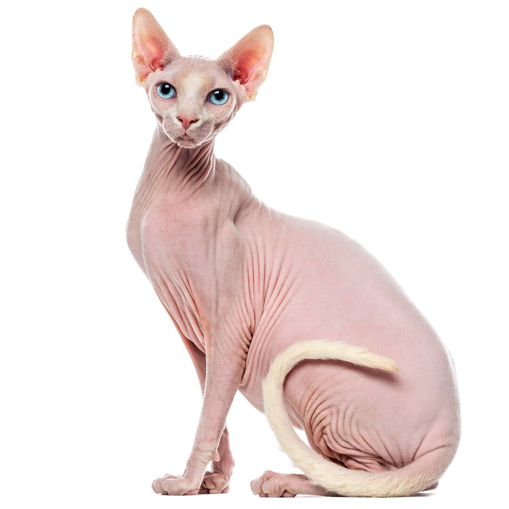

Despite an appearance that some consider repulsive
, Sphynx cats are one of the friendliest breeds in the world. The Sphynx, which gets its smooth skin as a result of a genetic mutation (though not all varieties are completely hairless), is suitable for families with children and other pets.
Sphynxes also love to spend time with dogs! According to the Cat Fanciers' Association,
"they are extremely affectionate, known for their silly antics and appear downright clumsy when trying to be the center of attention." Sphynx cats are energetic and playful and love to impress their owners. They have very different grooming needs than animals with fur, so if a Sphynx cat wants to stay warm, she will snuggle up to you or other pets.